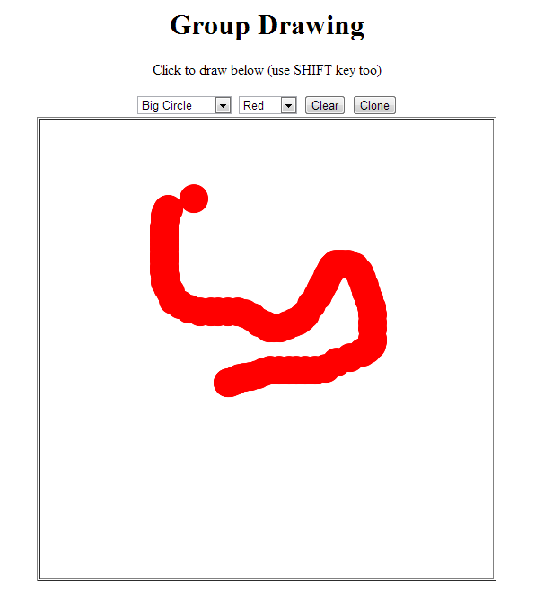

One of the samples in Tyrus is the Draw Sample. To run it, you need to add the following dependency to your pom file:
<dependency>
<groupId>org.glassfish.tyrus</groupId>
<artifactId>websocket-sample-draw</artifactId>
<version>1.0-b04</version>
</dependency>
Maven downloads the file websocket-sample-draw-1.0-b04.war during the built.
Now you need to download sources for the previous artefact and run the Main class - this starts the Draw server.
In the next step, deploy the websocket-sample-draw-1.0-b04.war on the application server and access it via some browser supporting WebSocket. You will be able to draw on HTML 5 canvas.
If you access the same address from another browser tab, you will be able to draw on the canvas too and see in real-time what the other connected hosts are drawing.
The Group Draw application screen shot:
